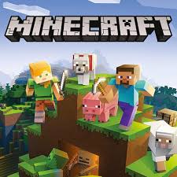

Minecraft est un jeu créé par Markus Persson souvent
surnommé "Notch" en 2009 et sorti en 2011.
C'est un jeu libre de type bac à sable ou le joueur peut explorer,
construire et survivre dans un monde cubique infini.
Le jeu propose 2 modes : Survie
et Créatif .
Minecraft est devenu un phénomène mondial
grâce à sa liberté de création
et sa simplicité graphique.
